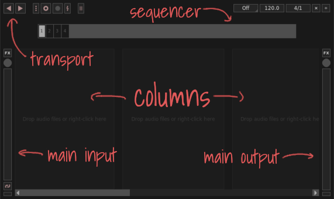
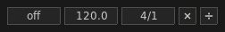

The main window is where you will spend most of your time when performing live with Giada. The upper section contains the main menu and several tools for audio input/output, tempo management, and global synchronization. The remaining space is dedicated to columns and channels.
Don't worry if the behavior of these elements is not clear yet — they will be explained in more detail in the next chapters. For now, let's take a quick look at the main components of the interface, starting with the central area.
Columns contain channels, which in turn hold audio samples or MIDI events. Channels are one of the fundamental building blocks of Giada, and they are where most of the sound comes from. Their usage is covered in the Performing part 1, Performing part 2, Channels and samples, and Channels and MIDI chapters.
You can add as many channels and columns as you like. Columns help you organize your project and arrange channels according to your workflow. For example, you might group drum kits in column 1, pads in column 2, and vocal loops in column 3. Each column contains a special channel — the column channel — that controls the audio and MIDI signals of all channels within that column.
These tools handle audio I/O: input on the left, output on the right. The circular knobs control the volume, while the vertical bars act as level meters. The meters range from -60 to 0 dBFS. When a bar is completely full, it means you are recording or playing at the maximum allowed level. If you go beyond this limit, the sound begins to clip and the meter turns red.
The button below the input meter is the stream linker  . When enabled, it routes the input audio directly to the output channel, allowing you to hear what you are playing in real time. The
. When enabled, it routes the input audio directly to the output channel, allowing you to hear what you are playing in real time. The  buttons are used to load audio plug-ins for both the input and output channels. For more information, see the Audio Plugins chapter.
buttons are used to load audio plug-ins for both the input and output channels. For more information, see the Audio Plugins chapter.
The sequencer is one of Giada's central tools. It keeps your live performance in sync and drives loops, samples, and MIDI events. It is controlled by the main transport, which includes the play/stop button to start and stop the song and the rewind button to quickly return the sequencer to the first beat.
The main transport also includes additional controls, such as the recording buttons (the second group from the left), which are used to toggle audio recording and action recording. For more information, see the Recording Actions and Live sampling chapters. The last button is the metronome, which is useful during recording sessions.

This set of tools is responsible for beat and tempo management. You can find it grouped in the top-right area of the main window. From left to right, the Quantizer aligns samples to beats and exact beat subdivisions. It works only when the main sequencer is running. For more information, see the Performing part 1 chapter. The BPM button changes the speed of your performance; the Beats/bars button changes the number of beats and bars in the main sequencer; and the Beat operators (the last two buttons on the right) dynamically decrease or increase the total number of beats in the main sequencer.
Scenes let you store different channel contents within the same project. A scene can change the actions assigned to MIDI and sample channels, as well as the samples loaded in sample channels, making it easy to switch between different parts of a performance. This allows you to build more varied and dynamic songs. For more information, see the dedicated Channels and Scenes chapter.